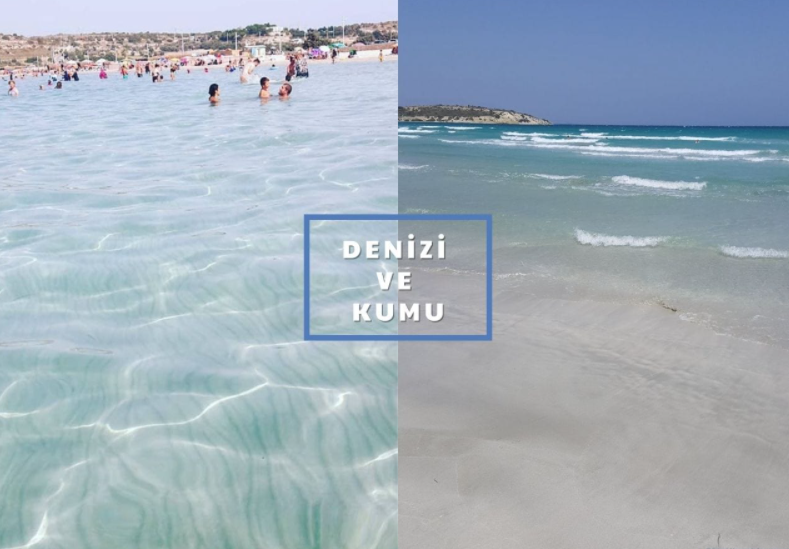
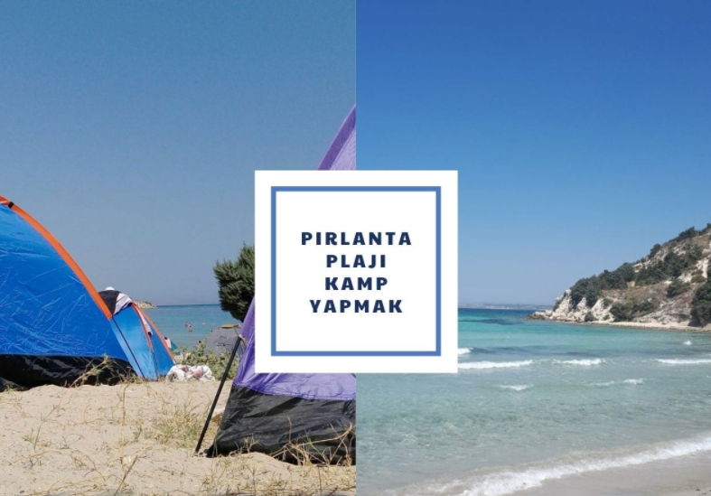

PIRLANTA PLAJI İZMİR
Sahilinin incecik kumlu tabakası ve plaj çevresinin SİT alanı olmasından dolayı plaj çevresindeki muhteşem doğası ile sahil, deniz, kum, güneş severlerin favori mekânı arasında.Plaja girişler ücretsiz olsa da içerisinde bulunan özel beachlerde şezlong, şemsiye, duş, yiyecek ve içecek imkanları bulabilmeniz mümkün. Aynı zamanda plajın rüzgar alma yapısı ile son zamanlarda popüler olan Kitesurf ve Windsurf sporlarının yapıldığı bir mekân oluyor.
Plaj içerisinde yer alan Uluslararası Kitesurf Organizasyonu (IKO)’nun, alanlarında sertifikalı ve uzman eğitmenler tarafından verilen eğitimler ile sizde bu sporları güvenilir bir şekilde öğrenebilir ve yapabilirsiniz.
Pırlanta Plajı Denizi ve Kumu Nasıl ?
 Müze, Plajın, masmavi ve tertemiz suyu ile cam gibi bir denizi olduğu söylenebilir. Fakat yaz aylarında oluşan kalabalıktan dolayı suyun temizliği bulanıklaşabiliyor.Fakat nisan ve mayıs aylarında cam gibi berrak bir suda yüzme şansınız bulunuyor. Aynı zamanda incecik kum tanelerinden oluşan ve deniz içinde de kumlu yapısıyla birçok ziyaretçinin favorisi.
Denizi yaklaşık 200 metre sığ bir şekilde olduğundan dolayı yüzmeyi yeni öğrenenler veya çocuklu aileler için oldukça avantajlı ve tercih edilen bir yer.Sahili yaklaşık 500 metre uzunluğa sahip ve deniz tabanında yumuşak ve kumlu olması birçok plaja göre avantaj sağlıyor.
Pırlanta Plajı Kamp İmkânı var mı ?
Pırlanta Plajı’nda aynı zamanda kamp severlerinde uğrak noktası. Plaj girişleri ücretsiz olduğu gibi kamp içinde ücret ödemenize gerek kalmıyor.Kamp yapmak isteyenler için ise tuvalet ve duş alanları bulunuyor. Tuvalet ücretsiz olduğu gibi duş ise 3 TL ücret ile konuklarına sunuluyor. Kamp yaparken çevrede ateş yakmak ise yasak. Plaj kamp severler tarafından yoğun şekilde ziyaret ediliyor.Sakin bir kamp arayışında olanlar için uygun bir ortam olmayabilir.Ayrıca bu bölgede kamp yapılsa dahi kamp alanı olarak geçmiyor.Yani aslında kamp yapmak yasak.Ancak bölge oldukça yoğun şekilde kamp yeri olarak kullanılıyor.